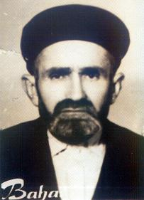

Sýddýk Süleyman (Kervancý) (?-1965)

Çoðu insanýn korkusundan yanaþamadýðý ve uzak durduðu bir dönemde Bediüzzaman Hazretlerine dost ve talebe olmuþtur. Sekiz yýl boyunca gördüðü samîmî hizmeti ve arkadaþlýðýndan dolayý “Sýddýk” unvanýný Üstadýndan almýþtýr. Cennet bahsini konu edinen Yirmi Sekizinci Söz onun bahçesinde yazýlmýþtýr. Bundan sonra bahçesinin adý da “Cennet Bahçesi” olmuþtur. Ankara’da vefat etmiþ, Barla’ya götürülerek defnedilmiþtir.Bediüzzaman Hazretlerini Barla’ya sürgün etmenin belki de en büyük gayesi; onu tamamen toplumun dýþýna atmak, insanlarla irtibatýný kesmek ve böylece vefatýna kadar silik bir hayat sürmesini saðlamaktý. Özellikle Barla gibi ýssýz ve ulaþýmý zor bir beldenin seçilmesi bunu açýkça göstermekte idi. Bu dönemde böyle sürgün hayatý yaþatma ve insanlarý muhtelif yollarla tehdit edip uzaklaþtýrma, sýk sýk baþvurulan yöntemlerin baþýnda gelmekte idi.
Barla ile ismi birlikte anýlan ve Barla denince ilk akla gelen simalardan bir tanesi kuþkusuz Bediüzzaman tarafýndan verilen “Sýddýk” unvanlý Süleyman idi. Yok edilmeye çalýþýlan bir fikir ve düþünce âliminin, yok edilemeyeceðini sadakatiyle gösteren Sýddýk Süleyman…
Sýddýk Süleyman’ýn nerede ve ne zaman doðduðu hakkýnda elimizde bilgi yoktur. Barla’da doðmuþ olabileceði tahmin edilmektedir. Biraz erken sayýlabilecek bir tarihte vefat etmiþ olmasýndan dolayý özgeçmiþi ile ilgili kendisinden bilgi alma imkâný olamadý. Hakkýndaki bilgiler 1926 yýlý sonrasýna dayanmaktadýr. Bundan öncesi ile ilgili herhangi bir bilgi yoktur.
Barla’ya gelen Bediüzzaman’a yakýnlýk gösterip yardým eden Sýddýk Süleyman hem yardýmcý, hem de talebe oldu. Sekiz sene boyunca sadakat ve hizmetini devam ettirdi. Sahip bulunduðu bahçesini Üstadýna tahsis etti. Sekiz sene sadâkatle Üstadýna hizmet etti. Sýddýk unvanýný aldý. Cennet konusunu iþleyen Yirmi Sekizinci Söz onun bahçesinde bir iki saat zarfýnda yazýldý. Bu risâlenin yazýlmasýndan sonra Süleyman’ýn bahçesinin adý “Cennet Bahçesi” oldu. Böylece hem bahçenin, hem de sahibinin adý unutulmazlar arasýna dâhil oldu.
Sýrf Allah rýzasý için kendisine büyük bir hizmette bulunan ve Risâle-i Nurun neþrinde katkýlarýyla hisse sahibi olan Süleyman, Bediüzzaman’ýn övgüsüne mazhar oldu. Her vesile ile hatýrý soruldu. Ayrýlýktan sonra da unutulmadý ve daima ismi duâya dahil edilenlerden olma bahtiyarlýðýna erdi; “… Senle (talebesi Sabri) Sýddýk Süleyman, benim nazarýmda ve fikrimde ve duâmda daima beraber bulunduðunuzdan, seninle konuþtuðum vakit, omuz omuza ikinizi beraber görüyorum. Mâsum ve mübarek çocuklarýnýz duâdan hissedardýrlar.” (Kastamonu Lâhikasý, s. 33).
Bediüzzaman Hazretleri maddî ve manevî sýkýntýlar içinde yaþarken özellikle bazý talebelerinin kendisini ziyaret etmesinden büyük bir mutluluk duymuþ ve mektuplarýna kaydettirmiþtir. Bu kayda geçenlerden birisi de yine Süleyman’dýr; “Bu þiddetli maddî ve mânevî kýþýn, sýkýntýlý maddî ve mânevî hastalýðý vaktinde dünyadan mufarakat ve pek çok alâkadar olduðum Nurcu kardeþlerimden iftirak ihtimalinden gelen elemler beni sýkarken, birden Sýddýk Süleyman, Nur Santralý Sabri, umum o havalideki kardeþlerim namýna ve nesebi akrabalarýmýn da hesabýna, Abdülmecid ve Abdurrahman mânâsýnda buraya geldiler. Cenâb-ý Hakk’a þükrediyorum, onlarýn gelmesi, bir panzehir hükmünde bana ilâç oldu. Ben de buradaki âdetime muhalif olarak ne olursa olsun yanýma dâvet ettim, geldiler. Ýki üç saat kadar tam bütün meraklarýmý, hususan Barla’daki dostlarýmýn hallerini anlamakla, Barla’daki eski zamanýma mesrurane bir seyahat-ý maneviye-i hayali yaptýk.” (Emirdað Lâhikasý, s. 167).
Sýddýk Süleyman’ýn hizmetini muhtelif vesilelerle öven, hizmetini takdir eden ve bunu diðer talebelerine yazdýðý mektuplarda da dile getiren Bediüzzaman, daima kendisine duâcý olduðunu da ilâve etti. “Mektuplarýnýzda ara sýra Sýddýk Süleyman’ýn, eski zamanda hararetli sadakati ve alâkadarlýðý ve kuvvetli þakirtliðiyle bahsi geçiyor. O zat, ben ölünceye kadar onun sadakati ve selâmet-i kalbini ve bana ve Risâle-i Nur’a halisane hizmetini unutamýyorum.” (Kastamonu Lahikasý, s. 140).
Risâle-i Nurda ismi zikredilen Sýddýk Süleyman, bazý hatýralarda da yad edilmektedir. Kendisinden hatýra nakledenlerden bir tanesi Bayram Yüksel’dir. Onun aðzýndan birkaç hatýrayý nakletmektedir; “Bir gün Üstadýmýza içimden dedim, “Biz yazýyoruz, biz okuyoruz. Üstad bu kadar zahmeti niye çekiyor.” diye düþündüm. Böyle mülâhaza ediyordum. Üstadým birden, “Kardaþým göreceksin ben bunlarý bütün dünyaya okutturacaðým” dedi. (Necmeddin Þahiner, Son Þahitler, 3. C., s. 74-75).
Barla’da sekiz yýl sadakatle Bediüzzaman’a baðlanan, ömrü boyunca iman hizmetini devam ettiren Sýddýk Süleyman 6 Mayýs 1965 tarihinde Ankara’da vefat etti. Naaþý buradan alýnarak Barla’ya götürüldü ve defnedildi.